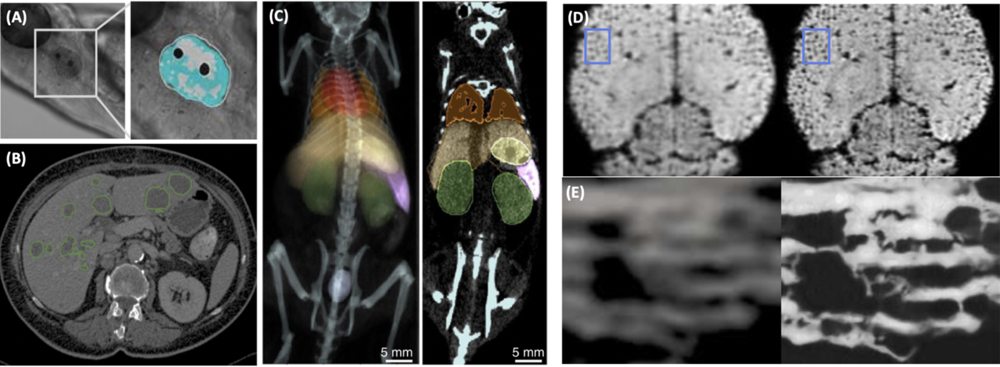

About me
I am a postdoctoral researcher specializing in machine learning for medical imaging at the Martinos Center, hosted by Matthew Rosen and Juan Eugenio Iglesias.
Prior to being in Boston, my research focused on medical image analysis, with a Ph.D. (Summa Cum Laude) from the Department of Computer Science at TUM, supervised by Bjoern Menze. In the course of my doctoral studies, I spent time in Daniel Rueckert's lab and at the Department of Quantitative Biomedicine at UZH for two years.
While enrolled in the Master's program, my thesis advisors, Wei-Shi Zheng and Jianguo Zhang, guided my work. I had the fortune to spend eight wonderful months at the School of Computing at the University of Dundee, at the end of which, we won the WMH segmentation challenge at MICCAI 2017.
In the early stages of my research, I collaborated with Wing-Kuen Ling on optimization methods for retinal image analysis for my Bachelor's thesis.
News
Research
Image segmentation and super-resolution
Uncertainty Quantification
(1) Uncertainty quantification in the high-dimensional representation space.
(2) Inter-rater uncertainty quantification in the annotations.
Representation Learning
(1) Imbalance-aware self-supervised learning.
(2) Masked autoencoder-based self-supervised learning.
Contact
Email: holi2 at mgh.harvard.edu or bran.hongwei.li at gmail.com